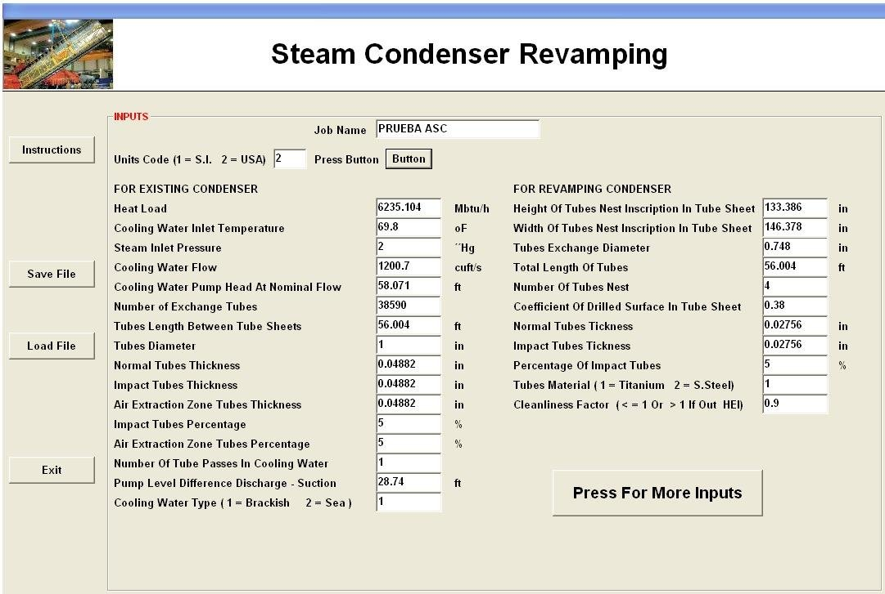
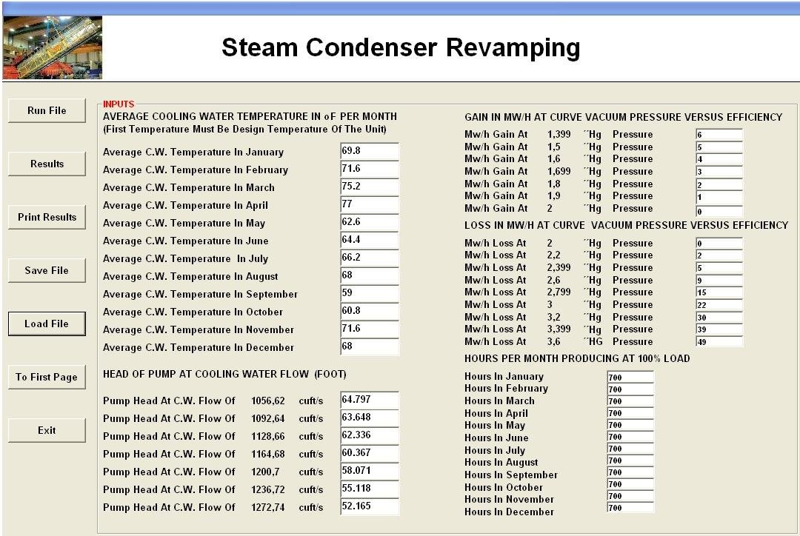
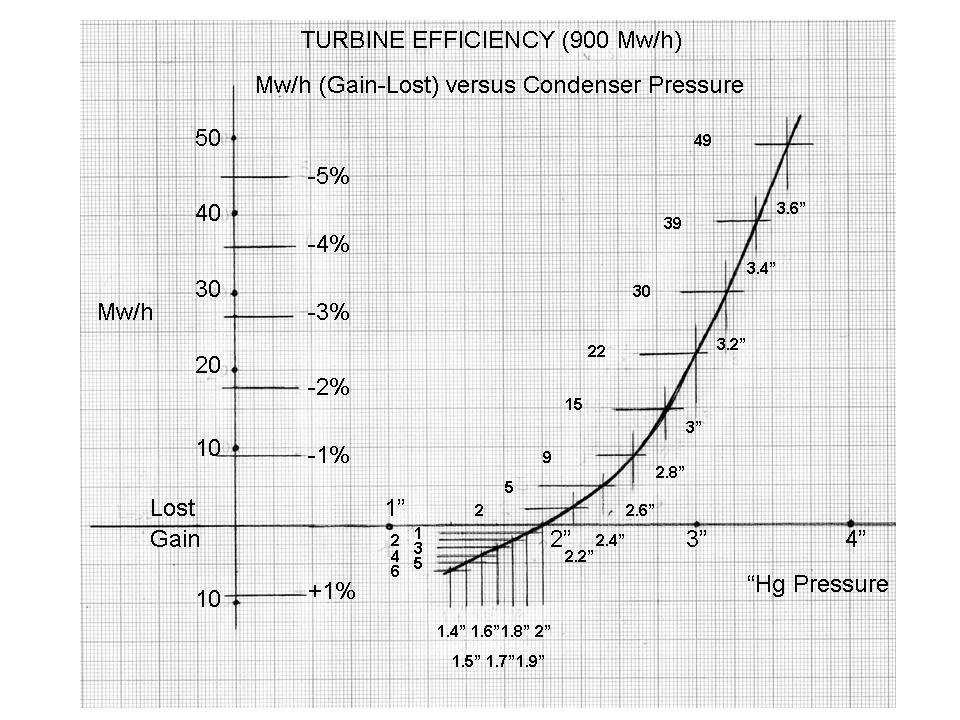
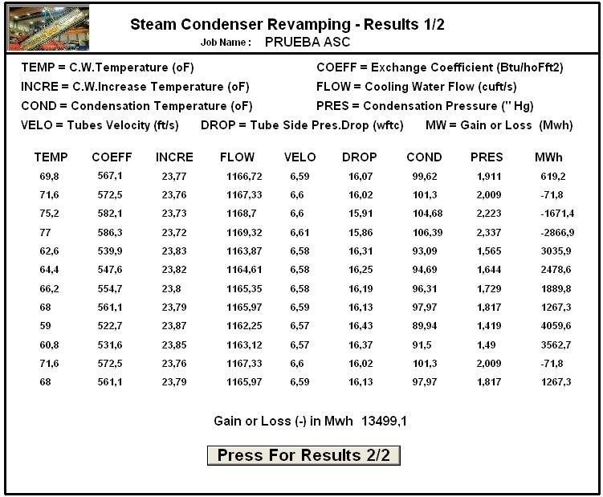
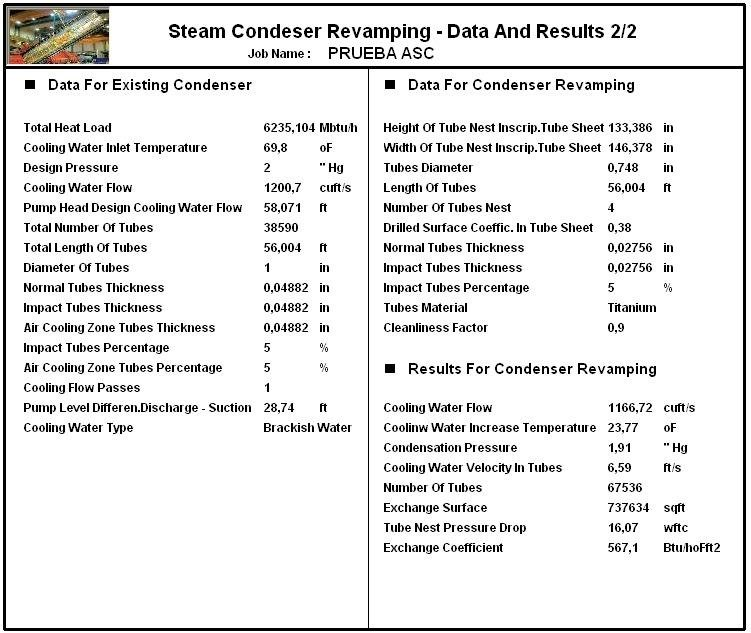

Condenser Revamping Software
Modular renovation of steam surface condensers by complete replacement of the tube bundles, with yearly production gains.
Modular renovation of steam condensers
This program is specifically adapted to the modular renovation of steam surface condensers through complete replacement of the tube bundles. It calculates the performance of the new unit and the corresponding production gains over a one-year period, from the turbine and cooling water pump characteristics.
In a modular revamping, the existing tube bundles are exchanged for a new design with different tube material, diameter and quantity. This calls for a hydraulic study of the available pumping capacity, while the new bundle must fit the space available in the condenser shell and should improve the efficiency of the unit by increasing the installed heat transfer surface.
The program is designed for equipment manufacturers taking part in the condenser revamping market, and it is also useful to plant owners: it can analyse the performance of an existing condenser, compare it with a hypothetical renovated one, or verify the loss of efficiency of a unit compared with its performance when it was installed.
Data entry
The first window collects the data of the existing condenser (heat load, cooling water inlet temperature and flow, design pressure, pump head at nominal flow, number, diameter, length and thickness of tubes, level difference between pump suction and discharge, type of water) and of the revamped condenser: maximum insertion dimensions of the new tube bundle, tube diameter and thickness, number of bundles, tube occupation coefficient of the tube sheet, tube material (titanium or stainless steel) and cleanliness factor. Exchange coefficients are according to HEI.

The second window collects the plant data: the average cooling water temperature for each month, the pump head curve at several cooling water flows, the turbine gain or loss in MWh versus condenser vacuum and the operating hours for each month.


Monthly results and production gain
For each month the program gives the cooling water temperature and temperature increase, exchange coefficient, cooling water flow and tube velocity, tube side pressure drop, condensation temperature and pressure, and the MWh gained or lost. The total gives the production gain of the revamping for the whole year.


Documentation
See the complete example with every input and results window in the program documentation:
Condenser Revamping – full documentation (PDF)Related programs
- Steam Surface Condenser – thermal and mechanical design of new steam surface condensers
- Steam Surface Condenser Performance – condenser performance test analysis
- Dual Pressure Condenser – condensers with a different turbine pressure in each shell
Condensers, feedwater heaters, deaerators, district heating, natural gas heaters and more, with a description of each program on the home page.
See all programs →